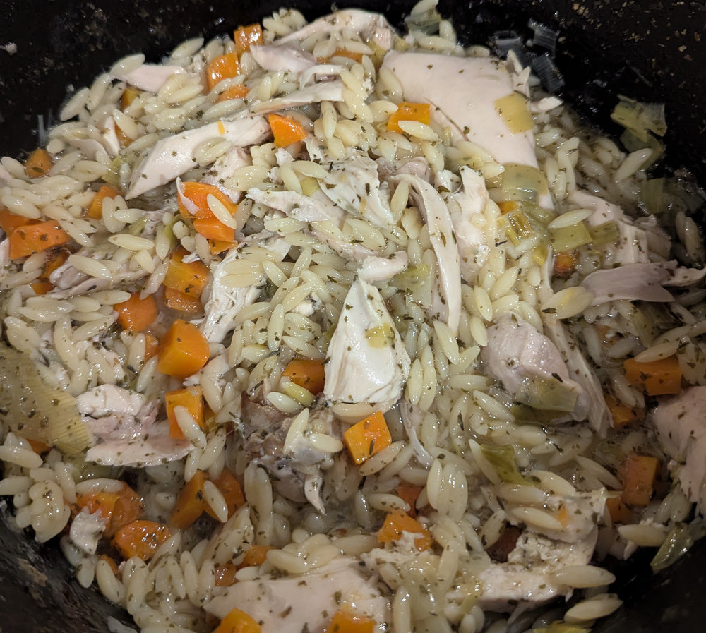

Pot Roast Chicken with Lemon & Orzo (or Rice)
 Source
Source Meat
Meat

2 tbspolive oil1.5kg or biggerwhole chicken2unwaxed lemons, zest & juice3 largecloves of garlic, minced350g or 2 largecarrots, cut into batons350g or 2 largeleeks, cut into rounds2 tspsea salt flakes½ tspchilli flakes (optional)2 tspdried tarragon1.5lcold water300gorzo pasta or risotto rice1 bunchflatleaf parsley to give 6 tablespoons finely chopped leaves, plus more to serve
Preheat the oven to 180°C/160°C Fan/350°F.
Heat the oil over high heat in a large heavy-based casserole or Dutch oven with a tightly fitting lid.
Remove any string from the chicken and place in the hot oil breast side down until the skin is richly golden, about 5-8 mins. Then turn the chicken the right way up.
Turn the heat to low and add the lemon zest and minced garlic into the pan around the chicken. Stir into the oil to fry gently.
Scatter in the prepared vegetables around the chicken, followed by the salt, chilli flakes (if using) and dried tarragon.
Pour cold water from the 1.5l measured into the chicken pot until the liquid comes up about two thirds of the leg of the chicken, leaving the breast sticking out of the water. Add the lemon juice.
Turn up the heat and bring the pot to a boil, leaving it uncovered. Try to keep the vegetables submerged.
Once boiling place on the lid and put into the preheated oven for 1 hour 15 minutes.
If using risotto rice, rinse well several times in cold water to remove some startch.
Take the pot out of the oven and stir in the orzo or rice, around the edges of the chicken, and then put the lid on again, and put the casserole back in the oven for another 15 minutes.
Take out of the oven and remove the lid, then let it stand for 15 minutes, stirring to loosen the orzo or rice that has stuck to the bottom of the pan.
Carefully remove the chicken to a cutting board and strip the meat from the carcass, leaving the skin and bones. Shred the chicken into large bite size pieces and return to the pot.
Stir in 4 tbsp of the freshly chopped parsley with the shredded chciken so everything is nicely mixed. Sprinkle over the remaining 2 tbsp of parsley and serve